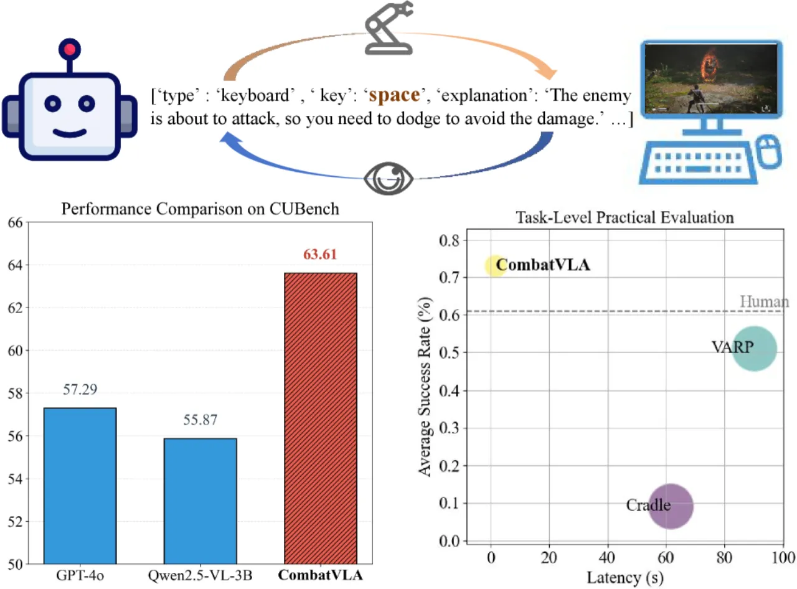
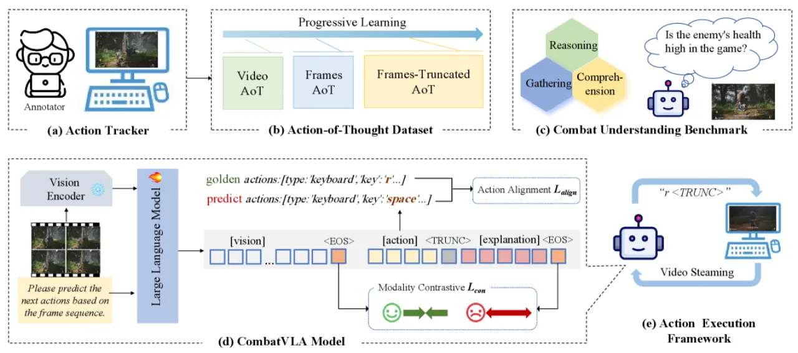
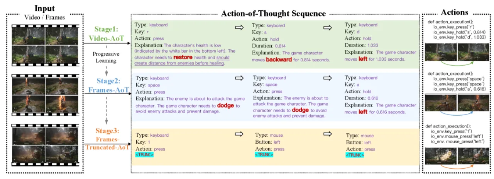
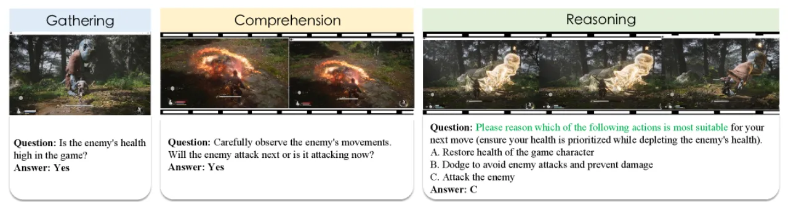
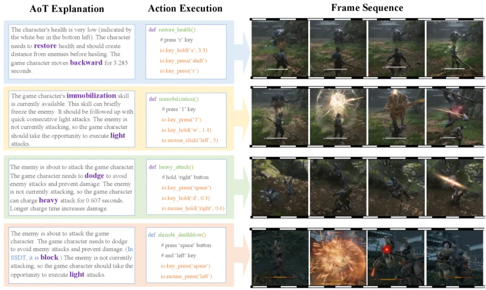

CombatVLA 是一个专为3D动作角色扮演游戏（ARPG）战斗任务设计的高效 Vision-Language-Action 模型。仅3B参数，通过三阶段渐进式学习和 Action-of-Thought（AoT）推理链，在保持通用视觉理解能力的同时，实现比现有方案快 50 倍的实时战斗响应，并在专属战斗理解基准 CUBench 上超越 GPT-4o、Gemini 等所有现有大模型。
现有大型视觉语言模型（VLM）无法满足复杂3D游戏战斗场景对"秒级响应、高分辨率感知和动态战术推理"的实时要求，而专用小模型又缺乏足够的通用视觉理解能力。
"Real-time decision-making in complex 3D environments … demand second-level responses, high-resolution perception, and tactical reasoning under dynamic conditions."

现有方案的核心瓶颈在于：
CombatVLA 的目标是在单次1.85秒推理内完成"观察→思考→行动"的完整闭环，同时保持通用视觉能力不大幅退化。
CombatVLA 以 Qwen2.5-VL-3B 为骨干，冻结视觉编码器，对语言模型全参数 SFT。核心创新是三阶段渐进式训练策略与 Action-of-Thought（AoT）推理链，以及针对动作优先级的自适应加权损失函数。

自研 Python 工具，以毫秒级精度同步记录键盘、鼠标操作与游戏截图，将动作通过时间戳协议对齐到最近的未来帧。共采集 25,000 张游戏截图（分辨率 1008×560），标注 5,000 条高质量 AoT 序列，覆盖10种动作类型（移动 WSAD、闪避 space、治疗 R、定身 1、轻/重攻击、冲刺等）。
输入完整视频（n=20帧，m=10 fps），学习粗粒度战斗理解与完整 AoT 推理链。训练 3 个 epoch。
输入帧序列（k=4 回溯帧），实现细粒度时序对齐，捕捉战斗动作的帧级依赖。训练 1 个 epoch。
引入特殊 ⟨TRUNC⟩ token，允许模型在完成动作预测后立即截断输出，跳过冗余推理文本。平均 token 数从 116.57 降至 43.10，推理速度提升约2倍。训练 3 个 epoch。

损失函数结合三项：语言建模损失 ℒ_lang、动作对齐损失 ℒ_align（优先级感知匹配，权重序列 α_i = 2^(k−i−1) 指数衰减并归一化至 [0.1, 1.0]）与模态对比损失 ℒ_con。三项联合优化，保证动作预测精度与视觉-语言模态对齐。

CUBench 共 914 条标注样本（39.4% Gathering / 22.3% Comprehension / 38.3% Reasoning），覆盖《黑神话：悟空》（BMW）和《只狼：影逝二度》（Sekiro）两款游戏，评测战斗场景下的感知、理解与战术推理能力。
在 CUBench 战斗理解基准和13项实际战斗任务上进行评测，与 GPT-4o、Gemini-2.0-flash、Claude3.5-Sonnet、Qwen2.5-VL 系列及 VARP、Cradle 等基线对比。
| 模型 | Gathering | Comprehension | Reasoning | Average |
|---|---|---|---|---|
| CombatVLA-3B（本文） | 60.83% | 60.29% | 69.71% | 63.61% |
| Gemini-2.0-flash | 58.61 | 64.22 | 50.86 | 57.90 |
| GPT-4o-0513 | 58.06 | 66.67 | 47.14 | 57.29 |
| Claude3.5-Sonnet | — | — | 55.43 | — |
| Qwen2.5-VL-3B（基线） | 53.61 | 56.86 | 57.14 | 55.87 |
CombatVLA 超越第二名 Gemini-2.0-flash 5.71 个百分点；在 Reasoning 子任务上比 Claude3.5-Sonnet 高出 14.28 个百分点。
| 方案 | 推理延迟 | 模型调用次数 | 相对 CombatVLA |
|---|---|---|---|
| CombatVLA（本文） | 1.85s | 1 | 1× |
| Cradle | 61.68s | 5 | 33× |
| VARP | 90.23s | 10 | 49× |
| 基准 | Qwen2.5-VL-3B（基线） | CombatVLA-3B |
|---|---|---|
| MME | 2157 | 2141 |
| VideoMME | 61.5 | 58.7 |
| OCRBench | 797 | 741 |
专项微调后通用能力小幅下降，但仍保持竞争力，表明 AoT 训练策略有效缓解了灾难性遗忘。

渐进式学习阶段消融（Table 4）：
损失函数消融（Table 5）：
结果表明三个损失分量各自贡献显著，缺少任一均导致准确率下降约2个百分点。
在《黑神话：悟空》10项任务和《只狼：影逝二度》3项任务（共13项）上进行实际游戏测试，涵盖简单到极难不同难度级别。Easy 任务达到与人类相当的成功率（70–90%）；Hard/Very Hard 任务上持续超越所有基线和人类水平，成功率稳定在70%以上。此外，模型在未见过任务上表现出较强的零样本泛化能力。
论文原文指出："Task definitions are somewhat simplistic" given evolving VLA capabilities。当前13项战斗任务的划分粒度和复杂度，随着 VLA 能力的进步可能需要重新设计，无法完全覆盖真实游戏中更丰富的战术场景。
论文明确指出："Research tested within BMW and SSDT games and has not extended to other scenarios"。模型目前仅在《黑神话：悟空》和《只狼》两款游戏上验证，跨游戏、跨类型的泛化能力尚未系统评估。
论文指出现有 VLM 和 VLA 在感知任务上"room for improvement"——当前模型在高速战斗中对细粒度视觉信号（如敌人细微动作、血量变化）的感知精度仍存在不足，通用基准（MME、VideoMME）上的小幅下降也印证了这一点。